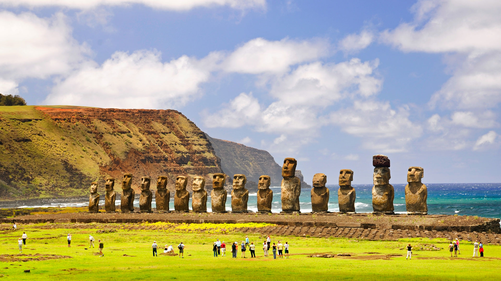
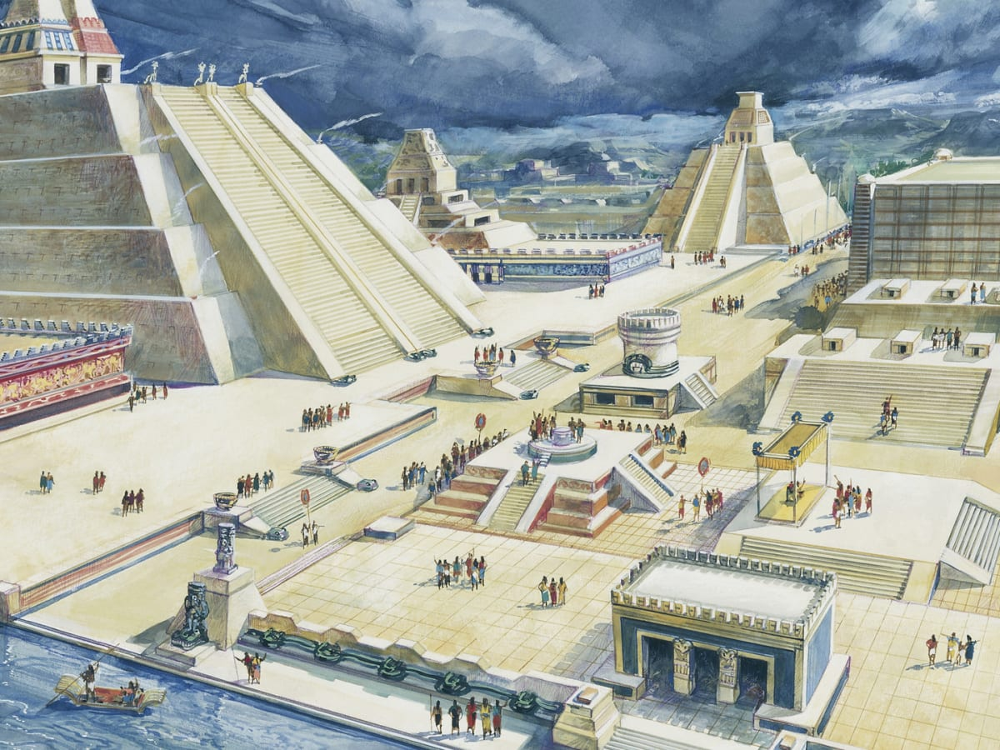
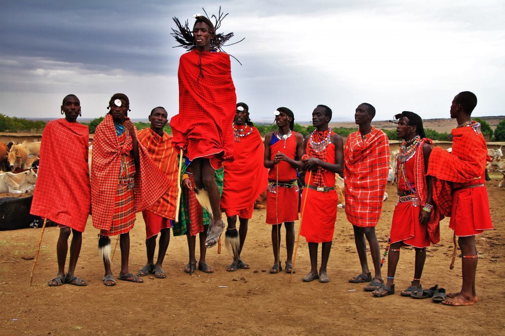
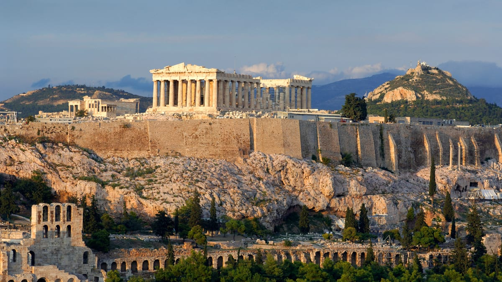

Research on historic places & people:
Easter Islands
Easter Island, a Chilean territory, is a remote volcanic island in Polynesia. Its native name is Rapa Nui. It’s famed for archaeological sites, including nearly 900 monumental statues called moai, created by inhabitants during the 13th–16th centuries. The moai are carved human figures with oversize heads, often resting on massive stone pedestals called ahus. Ahu Tongariki has the largest group of upright moai.
Aztecs
The Aztecs were a Pre-Columbian Mesoamerican people of central Mexico in the 14th, 15th, and 16th centuries. They called themselves Mēxihcah (pronounced [meˈʃikaʔ]). The capital of the Aztec Empire was Tenochtitlan. During the empire, the city was built on a raised island in Lake Texcoco.
Maasai Tribe
The Maasai are a Nilotic ethnic group inhabiting northern, central and southern Kenya and northern Tanzania. They are among the best known local populations internationally due to their residence many cities, beaches and near many game parks of the African Great Lakes, and their distinctive customs and dress.
Ancient Greece
Ancient Greece was a northeastern Mediterranean civilization, existing from the Greek Dark Ages of the 12th–9th centuries BC to the end of classical antiquity, that comprised a loose collection of culturally and linguistically related city-states and other territories. The Greeks were known for their sophisticated sculpture and architecture. Greek culture influenced the Roman Empire and many other civilizations, and it continues to influence modern cultures today.